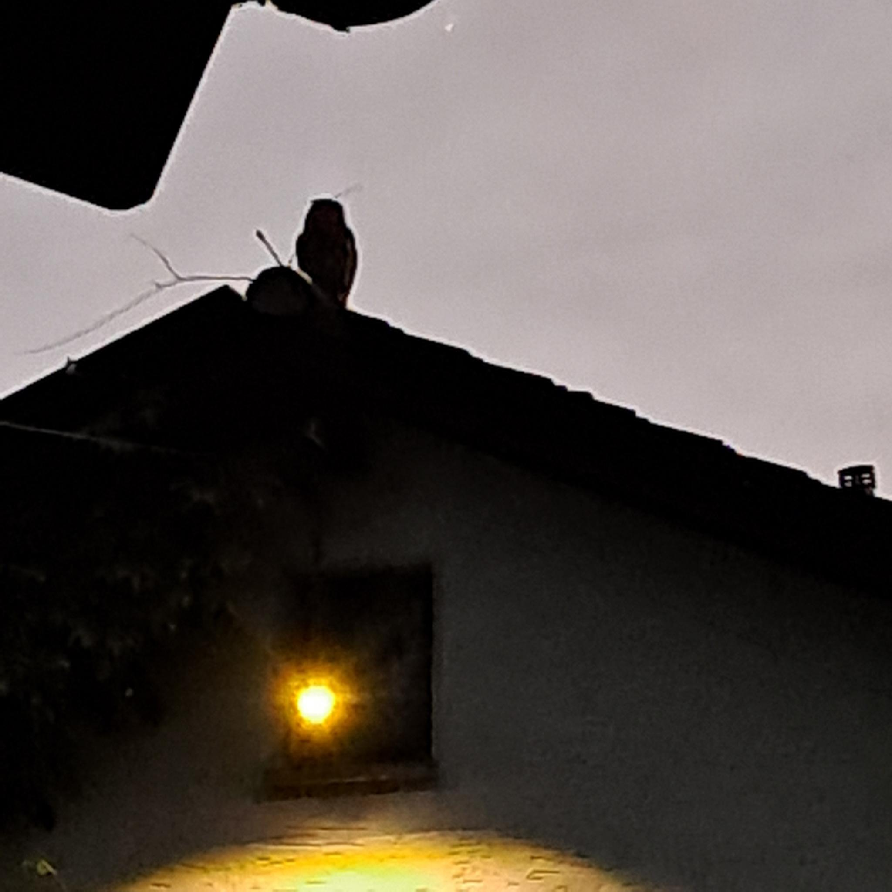

Willkommen bei der Dörfergemeinschaft Thürne e.V.
Die Dörfer Eichen, Houverath, Lanzerath, Limbach, Maulbach, Scheuren und Wald liegen in landschaftlich reizvoller Lage zwischen Bad Münstereifel, Rheinbach und dem Ahrtal rund um den 499 Meter hohen, markanten Vulkanberg Hochthürmen. Hauptort ist Houverath.
Die Region bietet als Lebensraum und Naherholungsbiet für Jung und Alt viele Annehmlichkeiten, durch die Internetanbindung via Glasfaserkabel sind moderne Kommunikations- und Arbeitsmodelle möglich. Attraktive Ausflugsmöglichkeiten sind u.a. das City Outlet Bad Münstereifel und das größte europäische Radioteleskop (100 m Durchmesser) in Effelsberg.
Thürne e.V.
Durch private Initiative wurde 2012 der Verein Thürne e.V. gegründet. Die Themen, die wir im Verein bearbeiten sind vielfältig geworden.
Unsere Themen
- Bau und Betrieb eines Backes mit monatlichen Backmöglichkeiten für jedermann
- Veranstaltungen, wie z.B. Italienischer Abend und Adventsmarkt
- Wartung der Spielplätze
- Jährliche Pflanzenbörse
- Müllsammelaktionen
- Entfernung des Jakobskreuzkrauts
- Freizeitaktionen für Jugendliche
- Herbstwanderung gemeinsam mit der DJK Hoverath
- Wanderweg Parcour der biologischen Vielfalt (wegen zerstörten Brücken leider im Augenblick gesperrt)
Aktuelles
- Neues aus der Redaktion:
Es gibt eine weitere Informationsseite zu Gesundheitsthemen! In Kürze wird es Informationen über die Vorsorge mittels Rotkreuzdosen auf dieser Seite geben.
Wir unterstützen den Schutz der seltenen Feuersalamander in unserer Dörfergemeinschaft.
Für Wünsche und Hinweise wird hier ein Kommentarbereich angeboten. Mit dem Klick können personenbezogene Daten, insbesondere deine IP-Adresse, an Padlet übertragen werden. Weitere Informationen findest du in der Datenschutzerklärung.
Bild des Monats

Fotoquelle: Yvonne Juni 2026
Unterstützen Sie uns
Mitmachen kann jeder, der sich nach Neigung, Ideen und Kenntnissen einbringen will. Aber allein schon mit Ihrer kostenlosen Mitgliedschaft unterstützen Sie uns. Hier geht’s zum Mitgliedsantrag. Sie können gerne mit unserem Verein Kontakt aufnehmen.